Sustitución del motor — Cambio manual
Herramientas especiales
| • | EN-796-A Extractor de herraje rápido |
| • | CH-807 Tapones de cierre |
| • | EN-6015 Tapones de cierre |
| • | CH-49289 Adaptador de centrado |
| • | CH-49290 Soporte de motor/cambio |
| • | EN-50057 Soporte de reparación del motor |
Si desea informarse sobre herramientas regionales equivalentes, consultar Herramientas especiales .
Procedimiento de desmontaje
- Desmonte el tornillo inferior del eje intermedio de la dirección. Consultar Sustitución del eje intermedio de la dirección .
- Abra el capó.
- Desmontar la pantalla de protección del motor. Consultar Sustitución del protector del motor .
- Recubra el agente frigorífico. Consultar Recuperación y recarga del agente frigorífico .
- Desmonte la bandeja de la batería. Consultar Sustitución de la bandeja de la batería .
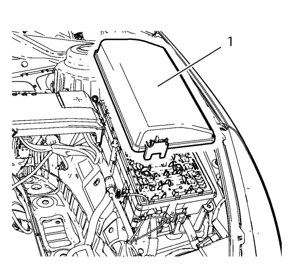
- Desmonte la cubierta del bloque de fusibles del compartimento delantero (1).
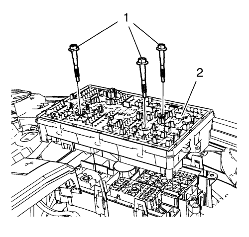
- Desmonte los 3 tornillos del bloque de fusibles del compartimento delantero (1).
- Desmonte el bloque de fusibles del compartimento delantero (2).
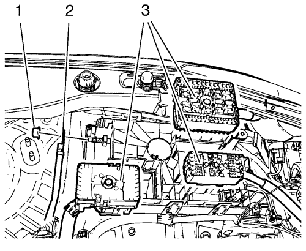
- Quite los 3 enchufes del mazo de cables (3).
- Desconecte el enchufe del mazo de cables del bloque de fusibles del compartimento delantero.
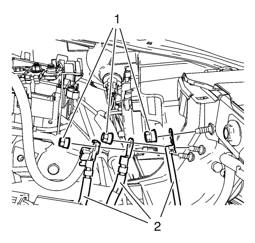
- Desmonte las 3 tuercas de masa (1) y aparte los 4 mazos de cables (2).
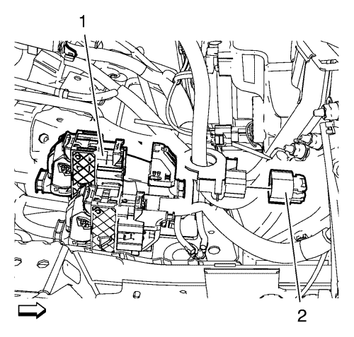
- Desconecte los 2 enchufes del mazo de cables (1, 2).
- Extraiga el conjunto del filtro de aire. Consultar Sustitución del filtro de aire .
- Desmonte el panel del paragolpes delantero. Consultar Montaje y desmontaje del paragolpes delantero .
- Desmonte el conjunto de llanta y neumático delantero. Consultar Desmontaje y montaje de la rueda y el neumático .
- Vacíe el sistema de refrigeración. Consultar Drenaje y llenado del sistema de refrigeración .
- Desenganche el vaso de expansión del radiador.
- Aparte el vaso de expansión del radiador.
- Desmonte del cambio los 2 cables de la palanca selectora del cambio manual. Consultar Sustitución de los cables de la palanca selectora y de la palanca de cambio del cambio manual .
- Desmonte el tubo flexible de entrada del calefactor de la pared frontal. Consultar
Sustitución del tubo flexible de entrada del calefactor. : 2.0L Diésel LNP → 1.8L 2H0 .
- Desmonte el tubo flexible de salida del calefactor de la pared frontal. Consultar
Sustitución del tubo flexible de salida del calefactor : 2.0L Diésel LNP → 1.8L 2H0 .
- Desmonte el tornillo del depósito del líquido de la servodirección.
- Desenganche el depósito del líquido del servofreno y apóyelo en el motor.
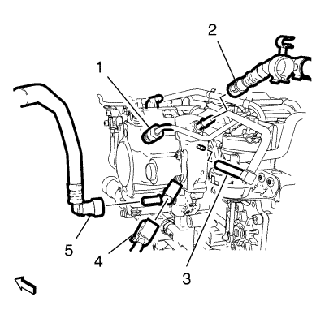
- Desemborne el enchufe del mazo de cables de la bomba de combustible de inyección de combustible (4).
- Desacople el tubo delantero de alimentación de combustible (5) y suéltelo del clip del tubo delantero de retorno de combustible. Consultar Servicio del adaptador de conexión rápida del collarín plástico .
- Cierre el tubo delantero de alimentación de combustible (5) con los tapones de cierre EN-6015.
- Desacople el tubo delantero de retorno de combustible (2) con la herramienta de desmontaje EN-796-A. Consultar Servicio del adaptador de conexión rápida del collarín plástico .
- Cierre el tubo de retorno de combustible de inyección de combustible con los tapones de cierre CH-807.
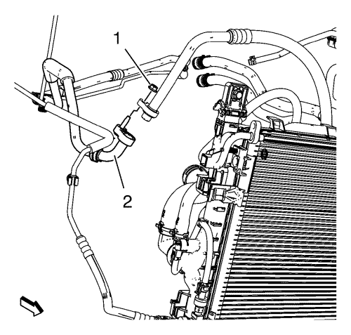
- Desmonte la tuerca del tubo flexible del compresor y el condensador del A/C (1)del tubo flexible de refrigerante (2).
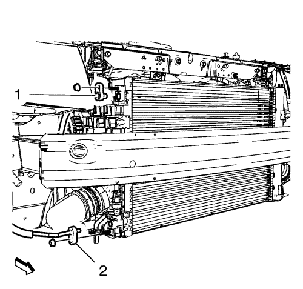
- Desmonte las tuercas del tubo flexible superior e inferior del condensador y los tubos flexibles superior e inferior del condensador (1, 2).
- Desmonte el tubo de escape delantero. Consultar
Sustitución del tubo de escape delantero : 2.0L Diésel LNP → LDE,LLU,LXT,LXV,L2W,2H0 .
- Desmonte la varilla de la barra estabilizadora del amortiguador en los dos lados. Consultar Sustitución de la varilla de la barra estabilizadora .
- Desmonte de la mangueta la barra de acoplamiento exterior del varillaje de la dirección en los dos lados. Consultar Sustitución la barra de acoplamiento exterior del varillaje de la dirección .
- Desmonte de la mangueta el brazo de apoyo inferior delantero. Consultar Sustitución del brazo de apoyo inferior .
- Desmonte los ejes de las ruedas delanteras de los cubos de rueda. Consultar Sustitución del árbol impulsor de la rueda delantera - Lado derecho .
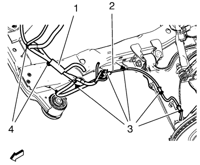
- Desmonte el mazo de cables (2) del sensor de velocidad de la rueda de ambos lados del bastidor.
- Desmonte los seguros (3) del mazo de cables del bastidor y del brazo de apoyo inferior.
- Desmonte los seguros (3) del mazo de cables del bastidor y del brazo de apoyo inferior.
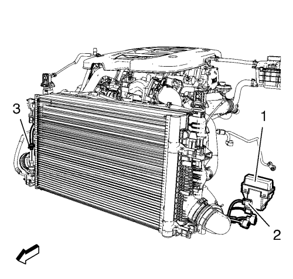
- Desmonte el ventilador de refrigeración del motor del mazo de cables.
| • | Desenchufe el ventilador de refrigeración del motor del conector de los 4 mazos de cables (2). |
| • | Desmonte el bloque de relés del mazo de cables del ventilador de refrigeración del motor (1). |
| • | Desenchufe el sensor de presión de agente frigorífico del aire acondicionado del conector del mazo de cables (3). |
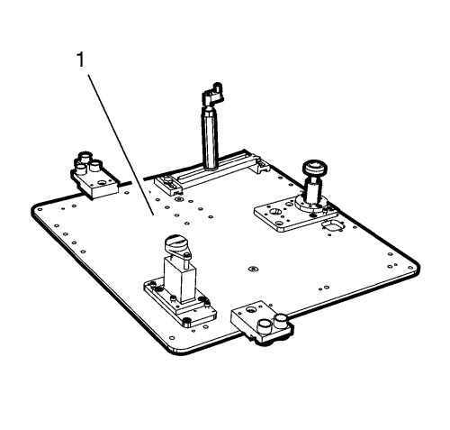
Nota: El manual de montaje de SPX se suministra con la herramienta especial y también está disponible en línea directamente en SPX. Vaya a www.spxtools-shop.com.
- Coloque la herramienta de soporte del motor CH-49290 (1) siguiendo las instrucciones del manual de instalación SPX.
- Apoye el bastidor base CH-904 en un gato.
- Apoye la herramienta de soporte del motor CH-49290 en el bastidor base CH-904.
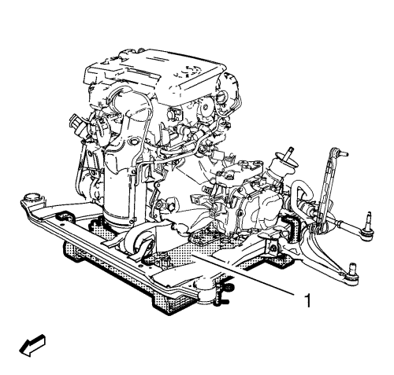
Nota: El manual de montaje de SPX se suministra con la herramienta especial y también está disponible en línea directamente en SPX. Vaya a www.spxtools-shop.com.
- Instale la herramienta de soporte del motor CH-49290 (1) siguiendo las instrucciones del manual de instalación SPX.
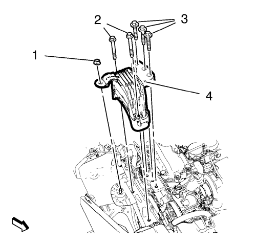
- Retire los 5 tornillos de retención del soporte del alojamiento del motor (2, 3) y la tuerca de retención del alojamiento del motor (1).
- Desmonte el soporte del motor (4).
- Desmonte el soporte izquierdo de la caja de cambios. Consultar Sustitución del soporte de montaje de la caja de cambios - lado izquierdo .
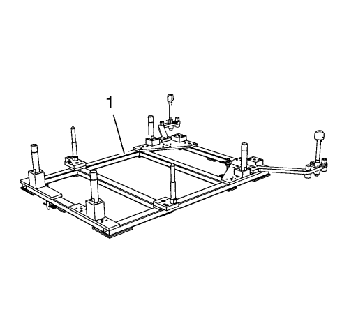
Nota: El manual de montaje de SPX se suministra con la herramienta especial y también está disponible en línea directamente en SPX. Vaya a www.spxtools-shop.com.
- Coloque el bastidor de centrado CH-49289 (1) siguiendo las instrucciones del manual de instalación SPX.
- Apoye el bastidor base CH-904 en un gato.
- Apoye el bastidor de centrado CH-49289 en el bastidor base CH-904.
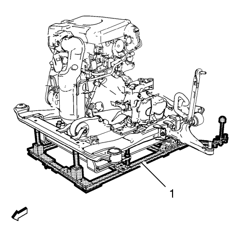
Nota: El manual de montaje de SPX se suministra con la herramienta especial y también está disponible en línea directamente en SPX. Vaya a www.spxtools-shop.com.
- Instale el bastidor de centrado CH-49289 (1) siguiendo las instrucciones del manual de instalación SPX.
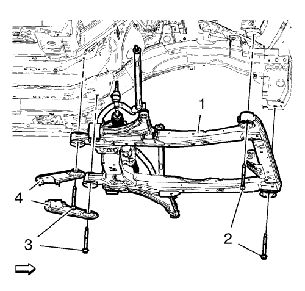
Nota: Gráfico simplificado. La unidad del motor y el cambio se fija con la herramienta del soporte del motor al bastidor de la suspensión. El bastidor de la suspensión se apoya en el adaptador de centrado y el bastidor inferior.
- Desmonte los pernos delanteros del bastidor (2)
- Desmonte los pernos traseros del bastidor (3)
- Desmonte los refuerzos del bastidor (4).
- Saque el bastidor (1) con la unidad de la transmisión del motor del vehículo.
- Desmonte el semieje derecho de la caja de cambios. Consultar Sustitución del árbol impulsor de la rueda delantera - Lado derecho .
- Desmonte el semieje izquierdo de la caja de cambios. Consultar Sustitución del árbol impulsor de la rueda delantera - Lado izquierdo .
- Monte un cable adecuado en los 3 soportes de elevación del motor.
- Monte un mecanismo de elevación del motor adecuado en el cable.
- Extienda el mecanismo de elevación del motor hasta que el cable de acero se tense un poco.
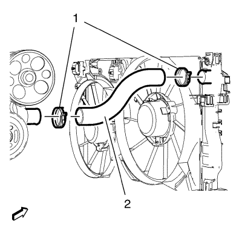
- Afloje la abrazadera del tubo flexible de salida del radiador (1) del radiador.
- Desmonte el tubo flexible de salida del radiador (2) del radiador .
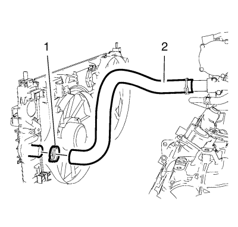
- Afloje la abrazadera del tubo flexible de entrada del radiador (1).
- Retire el tubo flexible de entrada del radiador (2) del radiador.
- Desmonte el tubo de entrada del refrigerador de aceite del cambio. Consultar Sustitución de la tubería de entrada del refrigerador del aceite del cambio
- Desmonte el tubo de salida del refrigerador de aceite del cambio. Consultar Sustitución de la tubería de salida del refrigerador de aceite del cambio
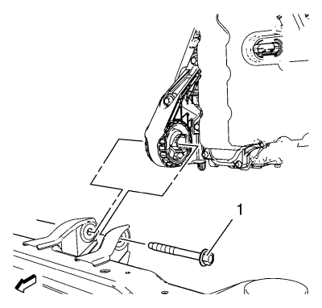
- Retire el tornillo pasante del soporte del transeje delantero (1).
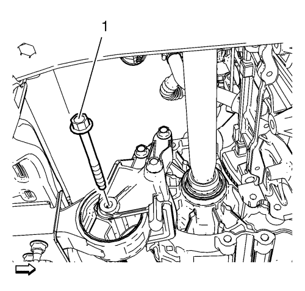
- Extraiga el perno pasante de montaje al soporte del cambio (1).
- Coloque la unidad del cambio del motor en un palé de madera.
- Afloje los 9 pernos de la caja de cambios y retire 8 de ellos. Consultar Sustitución de la caja de cambios .
Nota: Se requiere un segundo mecánico.
- Desmonte el último tornillo del cambio y el cambio.
- Monte el motor en el soporte de motor EN-50057.
- Transfiera las piezas según sea necesario.
Procedimiento de montaje
- Desmonte el motor del soporte de motor EN-50057.
- Coloque el motor en un palé de madera.
Nota: Se requiere un segundo mecánico.
- Monte el cambio y un tornillo del cambio.
- Monte los 8 tornillos del cambio.
Precaución:Consulte Precaución con las fijaciones en la sección Prólogo.
- Apriete los 9 tornillos del cambio. Consultar Sustitución de la caja de cambios .
- Coloque la unidad del cambio del motor en el bastidor delantero.
- Monte el perno pasante de montaje al soporte del cambio (1) y apriételo hasta 100 N·m (74 lib. pie).
- Monte el tornillo pasante del soporte del transeje (1) y apriételo a 58 N·m (43 lib. pie).
- Desmonte el cable de los 3 soportes de elevación del motor.
- Monte el tubo flexible de entrada del radiador (2) en el radiador .
- Monte la abrazadera del tubo flexible de entrada del radiador (1).
- Monte el tubo flexible de salida del radiador (2) uniéndolo al radiador.
- Monte la abrazadera del tubo flexible de salida del radiador (1).
- Monte el semieje izquierdo en la caja de cambios. Consultar Sustitución del árbol impulsor de la rueda delantera - Lado izquierdo .
- Monte el semieje derecho en la caja de cambios. Consultar Sustitución del árbol impulsor de la rueda delantera - Lado derecho .
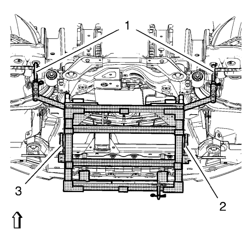
Nota: Los pernos de posicionado (1) del adaptador CH-49289 deben extenderse para guiarlos hasta los orificios de los bajos.
- Coloque el bastidor con la unidad de la transmisión del motor en el vehículo.
- Monte los refuerzos (3) del bastidor.
- Monte los tornillos traseros (2) del bastidor. Apriete sólo con la mano.
- Monte los tornillos delanteros (3) del bastidor. Apriete sólo con la mano.
- Apriete los tornillos del bastidor trasero (2) y apriételos a 160 N·m (118 lib. pie).
- Apriete los tornillos del bastidor delantero (1) y apriételos a 160 N·m (118 lib. pie).
- Baje el bastidor de centrado CH-49289 (1) con el bastidor base CH-904 y un gato.
- Extraiga el bastidor de centrado CH-49289 del bastidor base CH-904.
Nota: El manual de montaje de SPX se suministra con la herramienta especial y también está disponible en línea directamente en SPX. Vaya a www.spxtools-shop.com.
- Desmonte el bastidor de centrado CH-49289 (1) siguiendo las instrucciones del manual de instalación SPX.
- Monte el soporte izquierdo de la caja de cambios. Consultar Sustitución del soporte de montaje de la caja de cambios - lado izquierdo
- Monte el soporte del alojamiento del motor (4).
- Monte los 3 tornillos de retención del alojamiento del motor (3). No apriete los pernos.
Precaución:Consulte Precaución con las fijaciones en la sección Prólogo.
- Monte los 2 tornillos de retención del alojamiento del motor (2) y la tuerca de retención (1).
| • | Apriete los tornillos (2) a 58 N·m (43 lib. pie). |
| • | Apriete la tuerca (1) a 62 N·m (46 lib. pie). |
| • | Apriete los tornillos (3) a 58 N·m (43 lib. pie). |
- Baje la herramienta de soporte del motor CH-49290 (1) con el bastidor base CH-904 y un gato.
- Extraiga la herramienta de soporte del motor CH-49290 del bastidor base CH-904.
Nota: El manual de montaje de SPX se suministra con la herramienta especial y también está disponible en línea directamente en SPX. Vaya a www.spxtools-shop.com.
- Desmonte la herramienta de soporte del motor (1) CH-49290 siguiendo las instrucciones del manual de instalación SPX.
- Monte el tubo de escape delantero. Consultar
Sustitución del tubo de escape delantero : 2.0L Diésel LNP → LDE,LLU,LXT,LXV,L2W,2H0 .
- Monte el ventilador de refrigeración del motor del mazo de cables.
| • | Enchufe el sensor de presión de agente frigorífico del aire acondicionado del conector del mazo de cables (3). |
| • | Monte el bloque de relés del mazo de cables del ventilador de refrigeración del motor (1. |
| • | Conecte los 4 mazos de cables del ventilador de refrigeración del motor (2). |
- Monte el mazo de cables (2) del sensor de velocidad de la rueda a ambos lados del bastidor.
Acople los seguros (3) al mazo de cables del bastidor y al brazo de apoyo inferior.
- Bajar el vehículo.
- Monte los ejes de las ruedas delanteras en los cubos de rueda. Consultar Sustitución del árbol impulsor de la rueda delantera - Lado derecho .
- Monte el brazo de apoyo inferior delantero en la mangueta. Consultar Sustitución del brazo de apoyo inferior .
- Monte la barra de acoplamiento exterior del varillaje de la dirección en la mangueta en los dos lados. Consultar Sustitución la barra de acoplamiento exterior del varillaje de la dirección .
- Monte la varilla de la barra estabilizadora en el amortiguador en los dos lados. Consultar Sustitución de la varilla de la barra estabilizadora .
- Elevar el vehículo
Nota: Utilice una junta tórica nueva. Consultar Sustitución de la junta tórica del aire acondicionado .
- Monte las tuercas inferiores y superiores del tubo flexible del condensador y los tubos flexibles inferior e superior del condensador (1, 2) y apriételas a 19 N·m (14 lib pies).
Nota: Utilice una junta tórica nueva. Consultar Sustitución de la junta tórica del aire acondicionado .
- Instale el compresor del A/C y la tuerca del tubo flexible del condensador (1) en el tubo flexible de refrigerante (2) y apriételos a 19 N·m (14 lib pie).
- Retire los tapones de cierre CH-807 del tubo de alimentación de combustible de la válvula de inyección de combustible (1).
- Retire los tapones de cierre EN-6015 del tubo delantero de retorno de combustible (2).
- Conecte el tubo delantero de retorno de combustible (2). Consultar Servicio del adaptador de conexión rápida del collarín plástico .
- Acople el tubo delantero de alimentación de combustible (5) y fíjelo al clip del tubo delantero de retorno de combustible. Consultar Servicio del adaptador de conexión rápida del collarín plástico .
- Emborne el enchufe del mazo de cables de la bomba de inyección de combustible (4).
- Enganche el depósito de líquido de la servodirección.
- Monte el tornillo del depósito del líquido de la servodirección y apriételo a 9 N·m (80 lib. pulg.).
- Monte el tubo flexible de entrada del calefactor en la pared frontal. Consultar
Sustitución del tubo flexible de entrada del calefactor. : 2.0L Diésel LNP → 1.8L 2H0 .
- Monte el tubo flexible de salida del calefactor en la pared frontal. Consultar
Sustitución del tubo flexible de salida del calefactor : 2.0L Diésel LNP → 1.8L 2H0 .
- Monte los 2 cables de la palanca selectora del cambio manual en la caja de cambios. Consultar Sustitución de los cables de la palanca selectora y de la palanca de cambio del cambio manual .
- Enganche el vaso de expansión del radiador.
- Llene el sistema de refrigeración. Consultar Drenaje y llenado del sistema de refrigeración .
- Monte el conjunto delantero de neumático y llanta. Consultar Desmontaje y montaje de la rueda y el neumático .
- Monte el panel del parachoques delantero. Consultar Montaje y desmontaje del paragolpes delantero .
- Monte la carcasa del filtro de aire. Consultar Sustitución del filtro de aire
- Conecte los 2 enchufes del mazo de cables (1, 2).
- Monte los 4 mazos de cables (2).
- Monte las 3 tuercas de masa (1) y apriételas a 9 N·m (80 lib. pulg.).
- Enganche los 3 enchufes del mazo de cables (3).
- Conecte el enchufe del mazo de cables en el bloque de fusibles del compartimento delantero.
- Monte el bloque de fusibles del compartimento delantero (2).
- Monte los 3 tornillos del bloque de fusibles del compartimento delantero (1) y apriételos a 22 N·m (16 lib. pie).
- Monte la cubierta del bloque de fusibles del compartimento delantero (1).
- Monte la bandeja de la batería. Consultar Sustitución de la bandeja de la batería .
- Monte el conjunto del filtro de aire. Consultar Sustitución del filtro de aire .
- Monte el protector del motor. Consultar Sustitución del protector del motor .
- Vacíe y llene el sistema de agente frigorífico. Consultar Recuperación y recarga del agente frigorífico .
- Compruebe el nivel de aceite y rellene con aceite de motor nuevo si es necesario.
- Ajuste el cable de la palanca de cambios y la palanca selectora la transmisión manual. Consultar Ajuste de los cables de la palanca de cambio y de la palanca selectora del cambio manual .
- Compruebe el nivel de aceite del cambio. Consultar Revisión del nivel de aceite del cambio .
- Rellene el sistema de refrigeración. Consultar Drenaje y llenado del sistema de refrigeración .
- Cierre el capó.
- Monte el tornillo inferior del eje intermedio de la dirección. Consultar Sustitución del eje intermedio de la dirección
| © Copyright Chevrolet. All rights reserved |